library(haven)
library(tidyverse)
library(dplyr)
library(ggplot2)
library(modelsummary)
library(kableExtra)
library(stargazer)Frequency of Health Problems vs. Income
Research Question and Literature
Disability and poverty tend to go hand-in-hand. According to researchers She and Livermore in 2009, annual poverty rates were found to be between 2 and 5 times higher among people with disabilities compared to those without disabilities. Some disabilities can make it extremely difficult to work a full-time 40 hour workweek, or even any hours a week depending on the severity. The risk of long-term poverty only increases with the duration of the disability, making older adults with disabilities more susceptible to being under the poverty line.
Many disabled people are trapped in poverty cycles due to disability benefits (SSI and Medicaid) that require individuals to work under a certain amount of hours per week and to consistently have little economic security in order to remain eligible for benefits. SSI recipients can only have $2,000 worth of ‘resources’ at any given time, and if they exceed this, they can no longer receive their monthly payment. Many of these SSI or SSDI payments themselves are also significantly below or barely meet the federal poverty level (Ives-Rublee et al., 2022). These factors contribute to the significant amount of disabled people who live at or below the poverty line.
Another contributing factor to this high poverty rate is that people with disabilities (34.4%) are employed at less than half the rate of people without disabilities (75.4%). Nearly half (43.7%) of unemployed people with disabilities report some type of barrier to employment, which could include a person’s own disability or the need for accommodations (U.S. Department of Labor, 2022).
Women are even more likely than men to have a disability, at 19% of women compared to 17.9% of men. Those in older age ranges are also significantly more likely to be disabled with 70.5% of those 80 years old and above being disabled compared to 19.7% of those between 45 and 54. (Brault, M.W. 2012)
The research question that I hope to answer with this project expands on prior research by looking specifically at the frequency of health problems that interfere with activities of daily living (ADLs). My research question is:
“Does having frequent health problems impact income?”
This is an important question to answer since people with more frequent health problems are likely not able to work as much as their healthy peers. They also likely need more financial resources to be able to survive and function, which can be more difficult for people who might not be able to work full-time or on a regular schedule. With this project, I hope to learn more about the difficulties that people with frequent health problems and chronic conditions experience in terms of income.
Hypothesis
- People with more frequent health problems typically have a lower income than those without frequent health problems.
This hypothesis seems to be supported by previous research in the disability field as discussed above.
Descriptive Statistics
GSS2022 <-
read_dta("C:/Users/10973/Downloads/DACSS603/DACSS603/Final_Project/GSS_2022/GSS2022.dta")
GSS2022 <-
subset(GSS2022,
select = c("disblty", "hlthprb", "realrinc", "age", "sex"))
sum(is.na(GSS2022))[1] 7681GSS2022 <- na.omit(GSS2022)
#save as csv
write.csv(GSS2022, file =
"Clean_GSS2022_data.csv",
row.names = FALSE)The data I used was collected from the General Social Survey in 2022. Respondents either completed face-to-face interviews, a web self-administered questionnaire, or a phone interview. There were over 7,000 missing values in the original data set so I decided to remove them for a better analysis. After removing all rows with NA values, there are 731 rows and 5 columns in our data frame. The summary statistics of each column are detailed in the table below.
datasummary(Heading("Disability Status") * disblty +
Heading("Health Problem Frequency") * hlthprb +
Heading("Income ($)") * realrinc +
Heading("Age") * age +
Heading("Sex") * sex ~
Mean + SD + Min + Max + Median + N,
data = GSS2022,
fmt = 2,
output = "kableExtra")| Mean | SD | Min | Max | Median | N | |
|---|---|---|---|---|---|---|
| Disability Status | 1.73 | 0.44 | 1.00 | 2.00 | 2.00 | 731 |
| Health Problem Frequency | 1.89 | 1.07 | 1.00 | 5.00 | 2.00 | 731 |
| Income ($) | 28664.01 | 32841.31 | 204.50 | 141848.33 | 18405.00 | 731 |
| Age | 44.20 | 14.98 | 18.00 | 84.00 | 42.00 | 731 |
| Sex | 1.51 | 0.50 | 1.00 | 2.00 | 2.00 | 731 |
The variables in the data set that I plan to use are:
DISBLTY
Do you have a long-standing illness, a chronic condition, or a disability?
- Values
- 1 = ‘YES’
- 2 = ‘NO’
GSS2022$disblty %>%
summary() Min. 1st Qu. Median Mean 3rd Qu. Max.
1.000 1.000 2.000 1.732 2.000 2.000 disblty_freq_table <- GSS2022 %>%
group_by(disblty) %>%
summarise(frequency = n()) %>%
arrange(desc(frequency))
disblty_freq_table# A tibble: 2 × 2
disblty frequency
<dbl+lbl> <int>
1 2 [no] 535
2 1 [yes] 196535/731 * 100[1] 73.18741196/731 * 100[1] 26.81259ggplot(GSS2022, aes(disblty)) +
geom_bar(fill = "#0073C2FF") +
labs(title = "Disability Status Bar Plot",
subtitle = "1 = Has Disability, 2 = No Disability") +
xlab("Disability Status") +
ylab("Count") +
theme_minimal()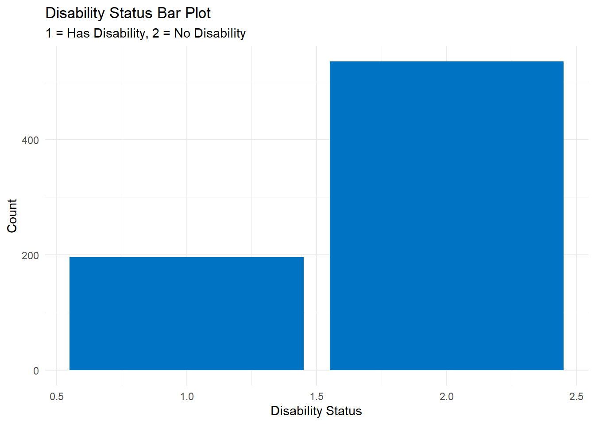
73.19% of respondents said that they did not have a disability, while 26.81% said that they did.
HLTHPRB
How often have you had difficulties with work or household activities because of health problems?
- Values
- 1 = ‘NEVER’
- 2 = ‘SELDOM’
- 3 = ‘SOMETIMES’
- 4 = ‘OFTEN’
- 5 = ‘VERY OFTEN’
GSS2022$hlthprb %>%
summary() Min. 1st Qu. Median Mean 3rd Qu. Max.
1.000 1.000 2.000 1.886 3.000 5.000 hlthprb_freq_table <- GSS2022 %>%
group_by(hlthprb) %>%
summarise(frequency = n()) %>%
arrange(desc(frequency))
hlthprb_freq_table# A tibble: 5 × 2
hlthprb frequency
<dbl+lbl> <int>
1 1 [never] 354
2 2 [seldom] 191
3 3 [sometimes] 128
4 4 [often] 31
5 5 [very often] 27354/731 * 100[1] 48.42681191/731 * 100[1] 26.12859128/731 * 100[1] 17.5102631/731 * 100[1] 4.24076627/731 * 100[1] 3.69357ggplot(GSS2022, aes(hlthprb)) +
geom_bar(fill = "#0073C2FF") +
labs(title = "Health Problems Bar Plot",
subtitle = "1 = Never, 2 = Seldom, 3 = Sometimes, 4 = Often, 5 = Very Often ") +
xlab("Frequency of Health Problems") +
ylab("Count") +
theme_minimal()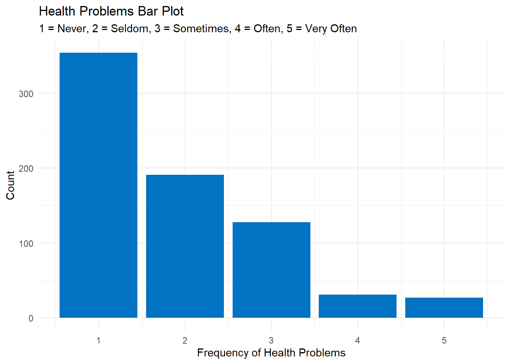
48.43% of respondents said that they never have difficulties with activities of daily living (ADLs), compared to 26.13% that said they seldom have difficulties with ADLs. 17.51% of respondents sometimes have difficulties with ADLs. Only 4.24% of respondents described the frequency of their difficulties with ADLs as being often, and 3.69% responded ‘very often’.
REALRINC
Respondent’s income in constant dollars (USD)
GSS2022$realrinc %>%
summary() Min. 1st Qu. Median Mean 3rd Qu. Max.
204.5 9202.5 18405.0 28664.0 33742.5 141848.3 hist(GSS2022$realrinc, xlab = "Income ($)", main = "Frequency Histogram of Income", col = "#0073C2FF")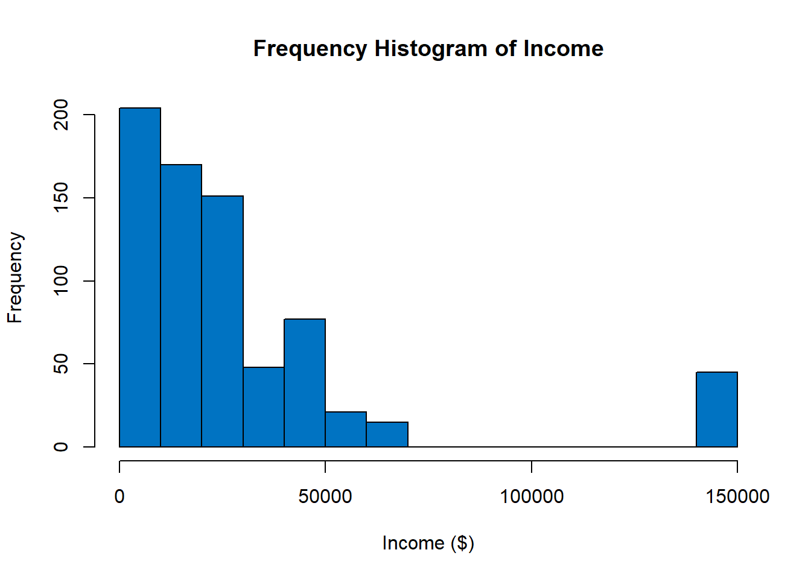
The mean respondent income in the sample was $28,664 while the median was $18,405. The minimum income was $204.50 while the maximum income was $141,848.30.
AGE
Respondent’s age
GSS2022$age %>%
summary() Min. 1st Qu. Median Mean 3rd Qu. Max.
18.0 32.0 42.0 44.2 56.0 84.0 hist(GSS2022$age, xlab = "Age", main = "Frequency Histogram of Age", col = "#0073C2FF")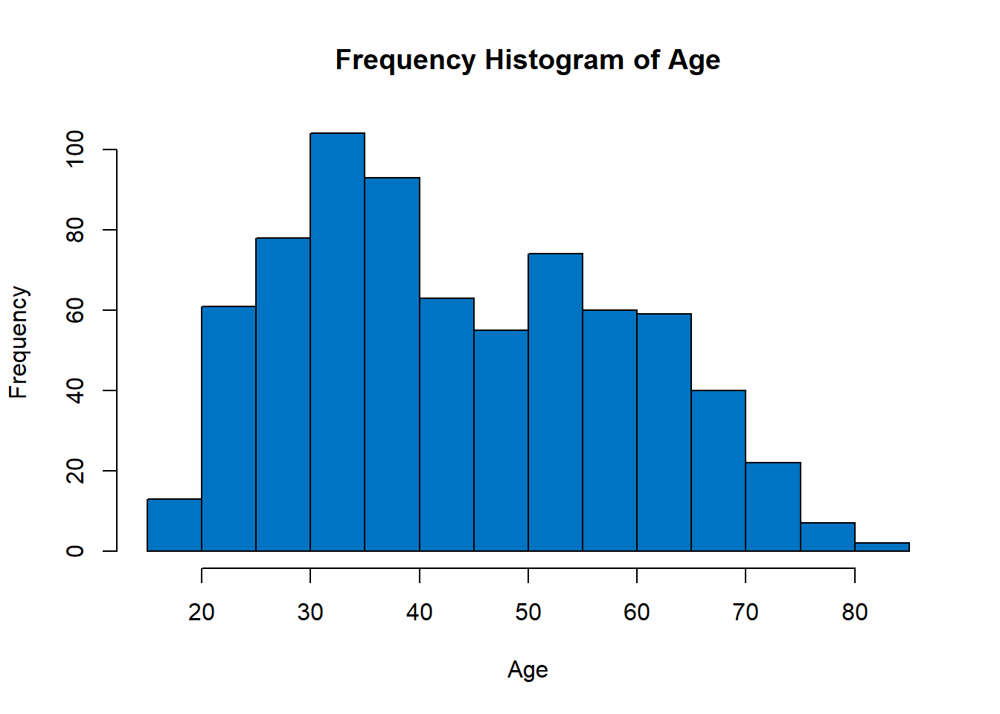
The mean age of the sample was 44.2 years old while the median age was 42. The minimum age was 18 and the maximum age was 84.
SEX
Respondent’s sex
- Values
- 1 = “Male”
- 2 = “Female”
GSS2022$sex %>%
summary() Min. 1st Qu. Median Mean 3rd Qu. Max.
1.000 1.000 2.000 1.509 2.000 2.000 sex_freq_table <- GSS2022 %>%
group_by(sex) %>%
summarise(frequency = n()) %>%
arrange(desc(frequency))
sex_freq_table# A tibble: 2 × 2
sex frequency
<dbl+lbl> <int>
1 2 [female] 372
2 1 [male] 359359/731 * 100[1] 49.11081372/731 * 100[1] 50.88919ggplot(GSS2022, aes(sex)) +
geom_bar(fill = "#0073C2FF") +
labs(title = "Sex Bar Plot",
subtitle = "1 = Male, 2 = Female") +
xlab("Sex") +
ylab("Count") +
theme_minimal()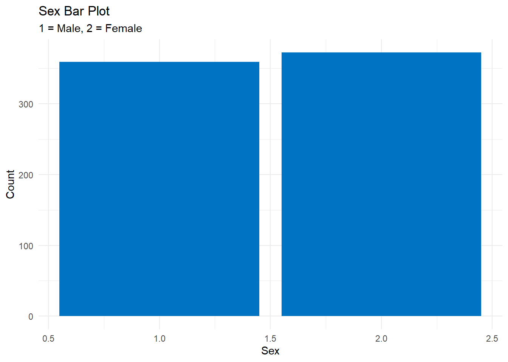
The sample was very evenly split among men and women, with men making up about 49.11% and women making up 50.89% of the sample.
Mean Income by Disability Status
tapply(GSS2022$realrinc, GSS2022$disblty, summary)$`1`
Min. 1st Qu. Median Mean 3rd Qu. Max.
204.5 7668.8 18405.0 24663.6 27607.5 141848.3
$`2`
Min. 1st Qu. Median Mean 3rd Qu. Max.
204.5 9713.8 22495.0 30129.6 33742.5 141848.3 People in this sample who had disabilities had a mean income of $24,663.60 and median income of $18,405.00. People in this sample who reported not having a disability had a mean income of $30,129.60 and a median income of $22,495.00. This shows that there was indeed a difference in income based on disability status.
Mean Income by Frequency of Health Problems
tapply(GSS2022$realrinc, GSS2022$hlthprb, summary)$`1`
Min. 1st Qu. Median Mean 3rd Qu. Max.
204.5 11247.5 22495.0 32280.8 40900.0 141848.3
$`2`
Min. 1st Qu. Median Mean 3rd Qu. Max.
204.5 8691.2 22495.0 30115.2 33742.5 141848.3
$`3`
Min. 1st Qu. Median Mean 3rd Qu. Max.
204.5 7668.8 15337.5 21400.7 23773.1 141848.3
$`4`
Min. 1st Qu. Median Mean 3rd Qu. Max.
204.5 3374.2 11247.5 15759.7 22495.0 49080.0
$`5`
Min. 1st Qu. Median Mean 3rd Qu. Max.
204.5 4141.1 13292.5 20227.6 27607.5 141848.3 Those who reported having no health problems in the last 12 months had the highest mean income at $32,280.80 and a median income of $22,495.00. People with very frequent health problems had the lowest mean income at $20,227.60 and a median income of $13,292.50.
Model Fitting/Hypothesis Testing
The response or outcome variable for this project is REALRINC (respondent income) while the explanatory or predictor variable is HLTHPRB (frequency of health problems affecting ADLs). First, let’s look at a scatterplot of the relationship between these two variables.
ggplot(GSS2022, aes(x = hlthprb, y = log(realrinc))) +
geom_smooth(method = "lm") +
xlab("Frequency of Health Problems") +
ylab("Log of Income ($)") +
ggtitle("Frequency of Health Problems vs. Income") +
theme_minimal()`geom_smooth()` using formula = 'y ~ x'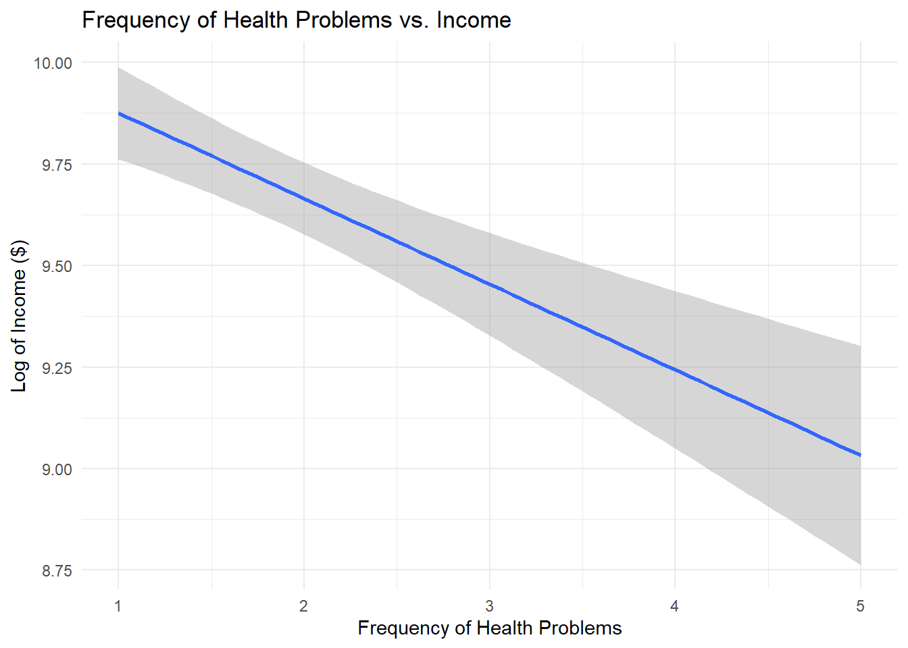
As we can see in the plot above, income decreases with each additional unit of the ‘hlthprb’ variable. Those with very frequent health problems make the least out of any group according to this graph, while those with no health problems tend to make the most.
Next, let’s plot the relationship between frequency of health problems and disability status in order to see how they are correlated with one another.
ggplot(GSS2022, aes(x = disblty, y = hlthprb)) +
geom_smooth(method = "lm") +
xlab("Disability Status") +
ylab("Frequency of Health Problems") +
ggtitle("Frequency of Health Problems vs. Disability Status") +
theme_minimal()`geom_smooth()` using formula = 'y ~ x'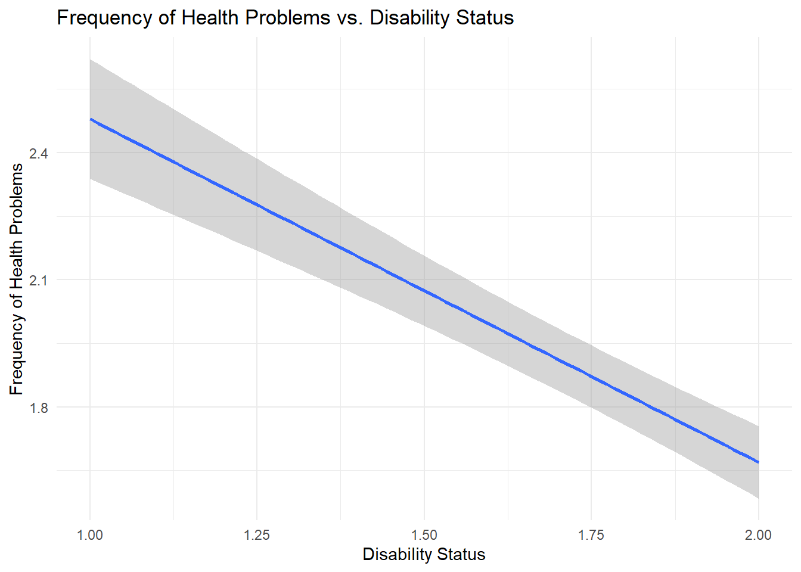
This graph shows that people with a disability (Disability Status = 1) have more frequent health problems on average than their non-disabled counterparts (Disability Status = 2).
DAG
In order to better visualize the relationship between the response and predictor variables, I created a directed acyclic graph (DAG) showing their relationship as well as how other variables may act as confounding variables and need to be controlled for prior to hypothesis testing.
library(dagitty)
d <- dagitty('
dag {
disblty -> hlthprb
disblty -> realrinc
hlthprb -> realrinc
sex -> disblty
sex -> hlthprb
sex -> realrinc
age -> disblty
age -> hlthprb
age -> realrinc
}
')
d |> graphLayout() |> plot()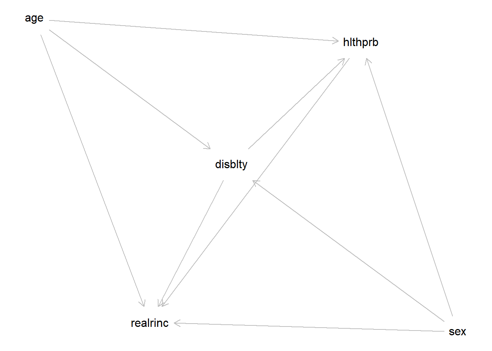
d |> adjustmentSets(exposure = "hlthprb", outcome = "realrinc"){ age, disblty, sex }Age, sex, and disability status all seem to be confounding variables that we will want to control for during our regression, since they can be causal influences for both frequency of health problems and income.
Multiple Regression Model
mod1 <- lm(log(realrinc) ~ hlthprb + sex + age + disblty, data = GSS2022)
confint(mod1) 2.5 % 97.5 %
(Intercept) 9.538028833 10.7864460
hlthprb -0.280490138 -0.1088803
sex -0.528276841 -0.1786638
age 0.003233178 0.0149505
disblty -0.195741272 0.2250196stargazer(mod1,
covariate.labels = c(
"Frequency of Health Problems",
"Sex",
"Age",
"Disability Status",
"Constant"),
dep.var.labels = "Income (USD)",
table.placement = "H")exp(-0.195)[1] 0.8228347(0.8228347 - 1) * 100[1] -17.71653-17.71653 * 4[1] -70.86612As shown in Table 1, when age, sex, and disability status are held constant, each increase of 1 unit in the ‘hlthprb’ variable leads to a corresponding 17.72% decrease in income. Compared to those with no difficulties doing ADLs due to health problems, those that very often have difficulty doing ADLs due to health problems are projected to make approximately 70.87% less. This makes sense, especially considering that people who have more difficulty with functioning due to health problems might not be able to work as frequently or have as stable of an income as people without these difficulties.
This supports my initial hypothesis that people with health problems tend to have less income on average than people without health problems. The confidence interval above (-0.28, -0.11) does not contain zero, which sows that there is a negative relationship between frequency of health problems and income.
Diagnostics/Model Evaluation
Diagnostics
plot(mod1)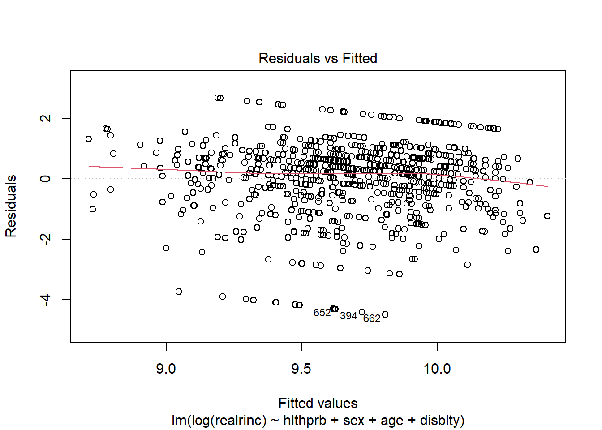
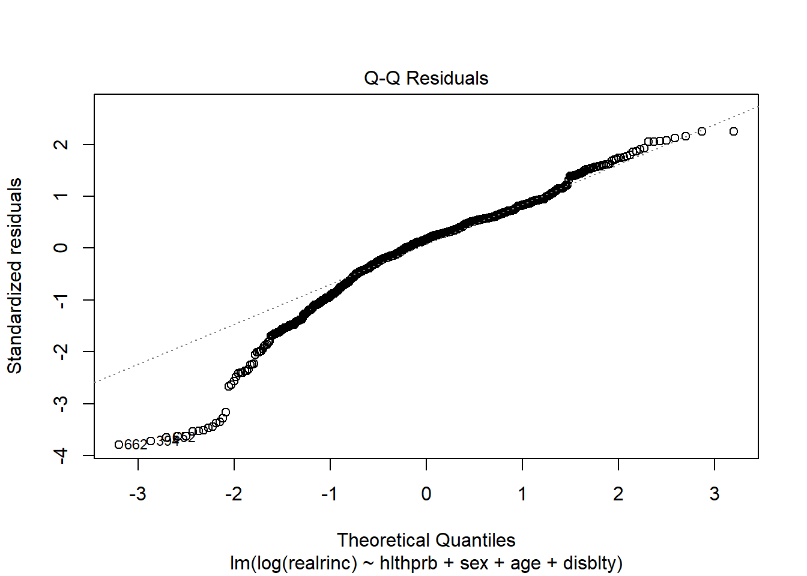
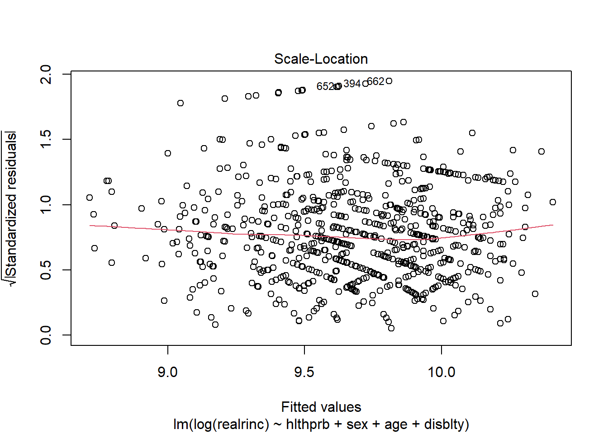
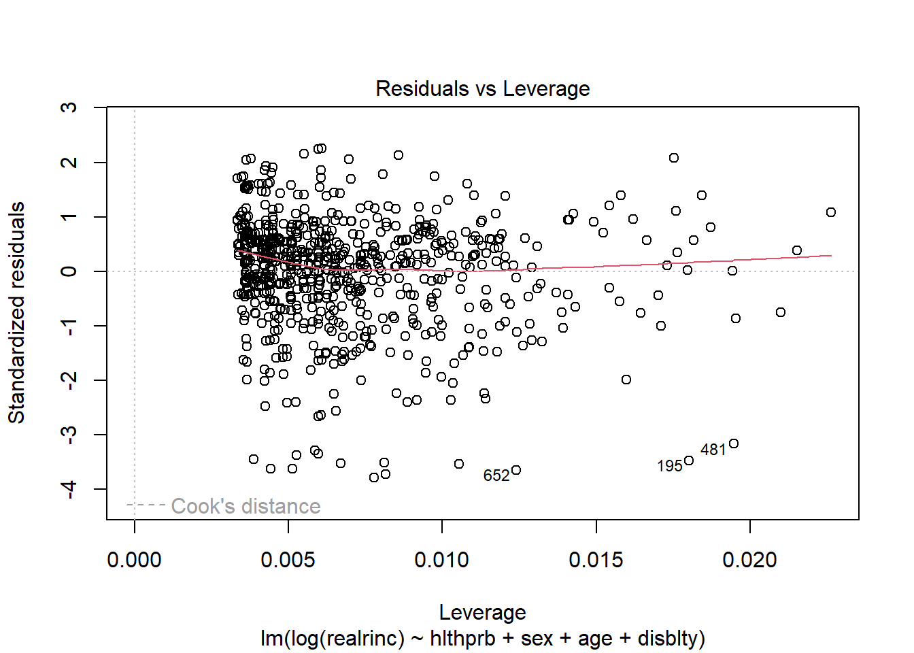
The ‘Residuals vs. Fitted Values’ graph shows that the linearity and homoscedasticity assumptions have been met due to the approximately horizontal red line and there being no positive or negative trend among residuals. The ‘Q-Q Residuals’ graph indicates that the model is approximately normally distributed due to the residuals being in close proximity to the line. The ‘Scale-Location’ graph also shows that the homoscedasticity assumption has been met due to the approximately horizontal red line and lack of a positive or negative trend. Finally, the ‘Residuals vs Leverage’ graph shows that there are no observations with both a high residual and a high leverage. This graph shows that there are no extremely influential observations that would skew our analysis.
Based on the plots above, we can see that the linearity, homoscedasticity, and normality assumptions have all been met.
Model Evaluation
The R-squared value for this model is 0.068, which means that the model only explains 6.8% of the variation in the outcome variable. This suggests a weak relationship between frequency of health problems and income.
Conclusion
As we have seen above, people with more frequent health problems tend to make much less than those with no or less frequent health problems. This is not a surprising result, since disability and health problems tend to go hand-in-hand. As mentioned above, there has been much previous research about how disabled people are more likely to be impoverished or to make less than those who are not disabled. This research is an expansion of that and highlights how difficult it can be for people with chronic health issues to make ends meet. Further research should look at other variables that may also be relevant and influential, such as number of days missed in the past year at work or whether a person works part-time or full-time.
Bibliography
Davern, Michael; Bautista, Rene; Freese, Jeremy; Herd, Pamela; and Morgan, Stephen L.; General Social Survey 1972-2024. [Machine-readable data file]. Principal Investigator, Michael Davern; Co-Principal Investigators, Rene Bautista, Jeremy Freese, Pamela Herd, and Stephen L. Morgan. Sponsored by National Science Foundation. NORC ed. Chicago: NORC, 2024: NORC at the University of Chicago [producer and distributor]. Data accessed from the GSS Data Explorer website at gssdataexplorer.norc.org.
Ives-Rublee, M., Khattar, R., & Roberts, L. (2022, May 2024). Removing obstacles for disabled workers would strengthen the U.S. Labor Market. Center for American Progress. https://www.americanprogress.org/article/removing-obstacles-for-disabled-workers-would-strengthen-the-u-s-labor-market/.
She, P. & Livermore, G.A. (2009). Long-term poverty and disability among working-age adults. Journal of Disability Policies Studies, 19(4), 244-256. https://doi.org/10.1177/1044207308314954.
U.S. Department of Commerce, U.S. Census Bureau. (2012). Americans with disabilities: 2010. https://www2.census.gov/library/publications/2012/demo/p70-131.pdf.
U.S. Department of Labor, Bureau of Labor Statistics. (2022). Persons with a disability: barriers to employment, types of assistance, and other labor-related issues. https://www.bls.gov/news.release/pdf/dissup.pdf.